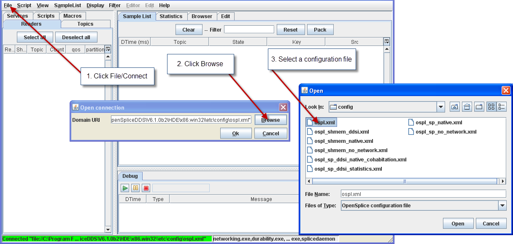
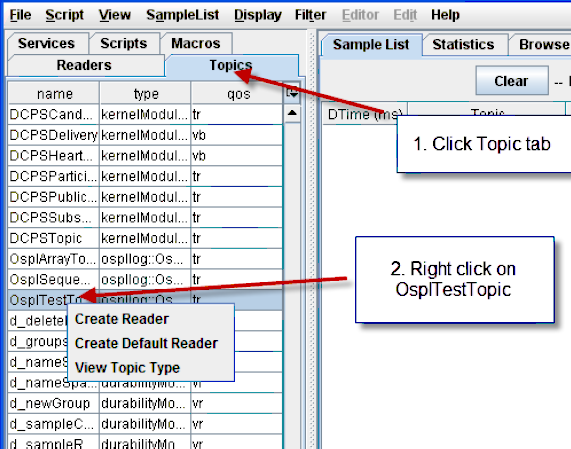
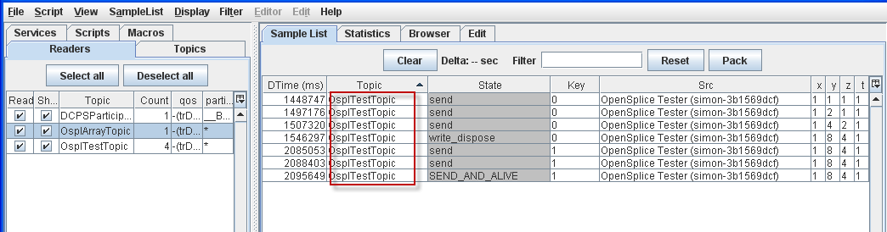
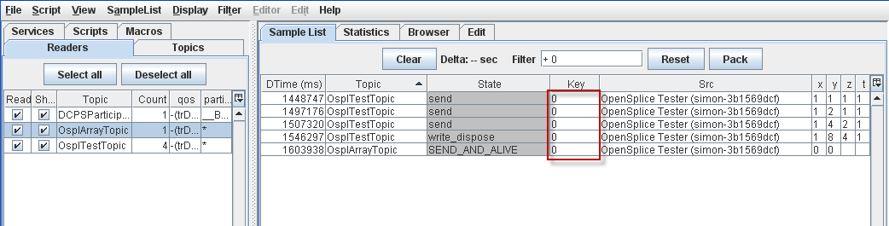
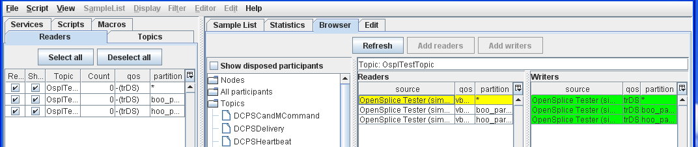
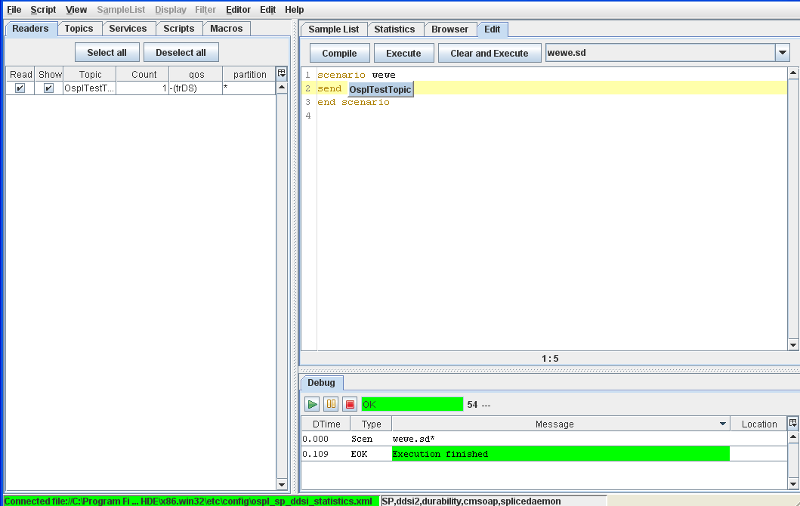

4. Familiarization Exercises¶
This section gives step-by-step instructions for using the Vortex OpenSplice Tester to perform many typical tasks to help you become familiar with the way it operates.
The exercises in this section assume that OpenSplice and the Tester have been succesfully installed. These illustrations make use of the example data supplied with the product.
4.1. Starting the Tester¶
OpenSplice must already be running before you start the Tester.
Step 1: Start Vortex OpenSplice
Step 2: Start the Tester:
- On Linux, run ospltest.
- On Windows, choose Vortex OpenSplice Tester from the Start menu or run ospltest from the Vortex OpenSplice command prompt.
Starting Tester
{kind=link}
4.2. Connection management¶
When it starts, the Tester will automatically try to establish a connection to a running instance of OpenSplice using the default URI. You can also make or break connections from the main window by following the steps given below.
The command line option -nac stops Tester from making a connection at startup, and with the -uri command line option a connection to an alternative URI can be made at startup.
4.2.1. To Connect to a local OpenSplice instance¶
Step 1: Choose File > Connect.
Step 2: Set the path or Browse to the configuration file (e.g., file://<OpenSplice install dir>/etc/config/ospl.xml).
Step 3: Click the OK button.
Connecting to a local OpenSplice instance
{kind=link}
4.2.2. To Connect to a remote OpenSplice instance¶
Step 1: Choose File > Connect.
Step 2: Enter the URI for the remote OpenSplice system (e.g., http://127.0.0.1:8000).
Note: The port number must be set to the port number as configured for the SOAP service of the remote OpenSplice instance.
Step 3: Click the OK button.
Connecting to a remote OpenSplice instance
{kind=link}
4.2.3. To Disconnect¶
Step 1: Choose File > Disconnect.
4.2.4. To Exit Tester¶
Step 1: Choose File > Exit or click the Close button  on
the Tester main window.
on
the Tester main window.
4.3. Topics and Readers¶
Tester can subscribe to multiple topics. These Readers will comprise a timeline for testing. Samples of those topics are automatically read and displayed in the Sample List. Tester readers can also be used to write or edit samples.
4.3.1. The Topic list¶
Check the Topic list. Make sure that the Tester is connected to the default URI.
4.3.2. To View a Topic’s Type definition¶
Step 1: Select the Topics tab.
Step 2: Right-click OsplTestTopic.
Step 3: Choose View Topic Type from the pop-up menu. The View Topic Type window will appear, displaying the type name and type description for the chosen topic.
Viewing a topic’s type
{kind=link}
4.3.3. To Add a Reader from the Topic list¶
Step 1: Select the Topics tab.
Step 2: Right-click OsplTestTopic.
Create Readers from the Topics list
{kind=link}
Step 3: Choose Create Default Reader from the pop-up menu. The reader will automatically be named the same as the topic.
Step 4: Choose Create Reader and modify the (writer) QoS or reader name if desired.
Step 5: Click Add.
Create myReader
{kind=link}
Step 6: Open the Readers tab and you will see the readers you just created.
{kind=link}
4.3.5. To Add multiple Readers to the Tester timeline¶
Step 1: Choose File > Add Readers.
Step 2: Type ospl in the filter field to limit the list of topics. Select OsplArrayTopic and OsplSequenceTopic.
Step 3: Click Add.
Adding multiple Readers
{kind=link}
4.3.6. To Save the current Readers to a file¶
If you need to preserve the Readers for a timeline, you can save the current Readers list.
Step 1: Choose File > Save Readers List.
Step 2: Enter a name for the new file.
Step 3: Click Save.
4.3.7. To Remove all Readers¶
Step 1: Choose File > Remove all Readers.
4.3.8. To Load Readers from a saved file¶
Step 1: Choose File > Load Readers List.
Step 2: Select the name of the saved file.
Step 3: Click Load.
4.3.9. To Delete a Reader¶
Step 1: Select OsplTestTopic reader from the list.
Step 2: Press the [Delete] key or right-click on OsplTestTopic and choose Delete Reader from the pop-up menu.
4.4. Samples¶
4.4.1. Writing and Editing Samples¶
4.4.1.1. To Write Sample Topic data¶
Step 1: Select OsplTestTopic reader from the list.
Step 2: Press [F4] or choose Edit Sample from the pop-up menu.
Step 3: Enter following values for the fields in the list:
id: 0, t: 1, x: 1, y: 1, z: 1
Entering sample topic data
{kind=link}
Step 4: Click the write button.
Step 5: Close the Edit Sample window.
4.4.1.2. To display detailed information on sample data¶
Step 1: Double-click on the first OsplTestTopic sample in the Sample List window.
Display detailed sample data information

4.4.1.3. More information on sample info¶
The detailed sample data table displays sample info data of a given sample. Some fields are derived from middleware sample info data, while others are not. What follows is a description of some of those fields.
- The insert_latency is a calculated value representing the difference between the sample’s insert timestamp, and its write timestamp, as it is received in the sample info.
- The relative_time is a Tester specific time measurement, in seconds. It does not represent any actual timestamps from the middleware. Its main use is determining the time elapsed between a Tester scenario script execution start and the sample receipt. It’s mainly meant as a loose measurement of time tracking since start of sample reading or start of a script scenario, and not as a strict real-time middleware timing.
4.4.1.4. To Display extra fields¶
By default the Sample List displays topic-independent fields. You can add topic-specific fields as follows:
Step 1: Select any sample.
Step 2: Press [F9] or right-click and choose Select Extra Fields from the pop-up menu.
Step 3: Click to select (‘check’) x, y, z and t.
Selecting extra fields to display
{kind=link}
Step 4: Click OK.
The selected fields will be added to the Sample List.
New fields added
{kind=link}
4.4.1.5. To Edit a sample¶
Step 1: Select the first sample.
Step 2: Press [F4] or choose Edit Sample from the pop-up menu.
Step 3: Enter following values in the fields:
id: 0, x: 1, y: 2, z: 1, t: 1
Step 4: Click Write.
Step 5: Enter following values in the fields:
id: 0, x: 1, y: 4, z: 2, t: 1
Step 6: Click Write.
Step 7: Enter following values in the fields:
id: 0, x: 1, y: 8, z: 3, t: 1
Step 8: Click Write.
- Step 9: Enter following values in the fields:
- id: 1, x: 1, y: 8, z: 4, t: 1
Step 10: Click WriteDispose.
4.4.1.6. To Compare two samples¶
Step 1: Double-click the sample with the values id: 0, x: 1, y: 4, z: 2, t: 1.
Step 2: Select the sample with the values id: 0, x: 1, y: 8, z: 3, t: 1.
Step 3: Press [F2] or choose Compare Samples from the pop-up menu.
Comparing samples
{kind=link}
4.5. Filtering¶
Filtering: un-filtered Topic list
{kind=link}
4.5.1. To Filter the Sample List on a Topic¶
Step 1: Select the OsplTestTopic sample.
Step 2: Press [F5] or choose Filter on Topic from the pop-up menu.
Sample List filtered by Topic
{kind=link}
4.5.2. To Reset Filters and display all samples¶
Step 1: Press [F7] or choose Reset filter from the pop-up menu or click the Reset button on the Sample List window.
4.5.3. To Filter on both Topic and Key¶
Step 1: Select OsplTestTopic with id(key): 1.
Step 2: Press [F5] or choose Filter on topic and key from the pop-up menu.
Sample List filtered by Topic and Key
{kind=link}
4.5.4. Filter samples on State¶
Step 1: Select a sample with a State of SEND_AND_ALIVE.
Step 2: Choose Filter on State from the pop-up menu.
Sample List filtered by State
{kind=link}
4.5.5. To Filter Samples on Key value¶
Step 1: Select OsplTestTopic with id(key): 0.
Step 2: Choose Filter on key from the pop-up menu.
Sample List filtered by Key value
{kind=link}
4.5.6. Filter on column text¶
Step 1: Select the State column of any sample.
Step 2: Choose Filter on column text from the pop-up menu.
Step 3: Type in send.
Step 4: Press the [Enter] key.
Sample List filtered by column text
{kind=link}
4.5.7. Find specific text¶
Step 1: Press [Ctrl+F] to open the Find dialog.
The Find dialog
{kind=link}
Step 2: Type in the text to search for, and select any of the options if required.
Step 3: Click Find. The first occurrence of the search text is highlighted.
Step 4: Click Find again to find the next occurrence of the search text.
4.5.8. Global Topic filters¶
Topic filters
{kind=link}
It is possible to completely hide certain topics from all views in the tool. These are global topic filter preferences, which can be enabled (true) or disabled (false). They are accessed from the preferences window in File > Preferences > Topic Filters. Enabling a given filter will hide the matching topics from the Topics table and from the system browser view.
4.6. Working with Samples¶
4.6.1. To Delete a column from the Sample List table¶
Step 1: Select the x column of any sample.
Step 2: Press the [Delete] key.
Column deleted from Sample List display
{kind=link}
4.6.2. To Chart Sample Data¶
Using any list of samples:
Step 1: Select the z column of any sample and press the [X] key.
Step 2: Select the y column of any sample and press the [Y] key.
Step 3: Choose SampleList > Show Chart or press [Alt+Shift+C] to display the chart.
Chart of Sample data
{kind=link}
4.6.3. To Dump a sample list to a file¶
Step 1: Choose SampleList > Dump.
Step 2: Enter a name for the file to save.
Step 3: Click Save.
4.6.4. To Dump selected Samples only¶
Step 1: Select OsplTestTopic with key: 1.
Step 2: Choose SampleList > Dump Selection.
Step 3: Enter a name for the file to save.
Step 4: Click Save.
4.6.5. To Dump to a CSV format file¶
Step 1: Choose SampleList > Dump to CSV.
Step 2: Enter a name for the file to save.
Step 3: Click Save.
4.6.6. To Dispose data with Alive state¶
Step 1: Choose SampleList > Dispose Alive.
Disposing data with ‘Alive’ state
{kind=link}
4.6.7. To Translate Sample data to test script¶
Step 1: Choose SampleList > Diff Script.
The Scripting commands to replicate all of the sample data will be inserted into the current scenario in the Edit window.
4.6.8. Translate selected sample to test script¶
Step 1: Select a set of samples.
Step 2: Choose SampleList > DiffScript Selection.
The Scripting commands to replicate this subset of the sample data will be inserted into the current scenario in the Edit window.
4.6.9. To display samples with not_alive_no_writers state¶
There is a setting to control whether Tester’s active data readers ignore samples whose state is NOT_ALIVE_NO_WRITERS.
If an application data writer has a QoS of autodispose_unregistered_instances set to false and then unregister_instance is called on a data writer for some instance, a sample reaches matching data readers with the no_writers state.
The default setting is true, which means that these samples are ignored and not displayed.
‘Max samples’ and ‘not_alive’ options
{kind=link}
4.6.10. To control the number of samples kept per reader¶
It is possible to limit the number of samples kept per reader. This setting, Max Samples kept per reader, is accessed by choosing File > Preferences > Settings.
This setting accepts integer values. The default value is 0, which means that there is no limit imposed on the number of samples that will be stored.
4.7. Groups¶
4.7.1. Definition of a Group in Tester¶
Vortex OpenSplice supports setting of the Presentation policy of publishers and subscribers. As a result, Tester can set these policies on its own created publishers and subscribers and be able to write/read coherent sets of data into/from the system.
Just as in Tester where data reader and data writer are aggregated into a Reader and listed in the Readers list, a custom created publisher and subscriber pair are aggregated into a Group and are listed in the Groups list. A Group has a defined Partition and Presentation QoS policy that is set on creation and is set to its contained publisher and subscriber.
4.7.2. To Add a Reader under a Group¶
Step 1: Choose File > Add Reader.
Step 2: Select OsplTestTopic from the drop-down topics list.
Step 3: Check the box labeled Create as group.
Step 4a: Choose a name for the Group (Group name must be unique and non empty).
Step 4b: Fill in desired Partition, and Presentation policy settings (Access scope, Coherent access and Ordered access).
OR
Step 4c: Select an already existing Group from the drop-down Groups list. Partition and Presentation form elements will populate to existing values for the selected Group and become disabled.
Step 5: Click Add.
Create a Reader under a Group
{kind=link}
Completing this action will create the Groups tab on the main panel if this is the first Group that has been created in the current session.
If there is already a reader existing on the selected topic, then the new reader must have a unique name assigned to it, else the new reader will not be created and assigned to the Group.
{kind=link}
4.7.3. To Add multiple Readers under a Group¶
Step 1: Choose File > Add Readers.
Step 2: Select OsplTestTopic, OsplArrayTopic, and OsplSequenceTopic from table.
Step 3: Check the box labeled Create as group.
Step 4a: Choose a name for the Group (Group name must be unique and non empty).
Step 4b: Fill in desired Partition, and Presentation policy settings (Access scope, Coherent access and Ordered access).
OR
Step 4c: Select an already existing Group from the drop-down Groups list. Partition and Presentation form elements will populate to existing values for the selected Group and become disabled.
Step 5: Click Add.
Create multiple Readers under a Group
{kind=link}
Completing this action will create the Groups tab on the main panel if this is the first Group that has been created in the current session.
If there is already a reader existing on a selected topic, then the new reader must have a unique name assigned to it, else the new reader will not be created and assigned to the Group. In this case, one should use the method in To Add a Reader under a Group.
4.7.4. To Publish coherent sets¶
Once at least one Group has been created, the Groups tab will become visible. It contains a list of currently active groups, their QoS policies, and current number of Tester readers (readers under the subscriber, writers under the publisher).
There are two actions available to rows of this table: Delete Group, and Publish Coherent Data.
Deleting a Group will also delete the readers that it owns.
If Publish Coherent Data is selected, then a new window will appear.
{kind=link}
Coherent Publisher Window
{kind=link}
This new view contains two parts: the list of writers currently under this Publisher, and the user data table containing data about the outgoing samples in a coherent set.
The actions available to the user in this view are:
- Begin coherent changes
- End coherent changes
- Refresh writer list
Begin coherent changes will set the publisher in coherent mode. In this state, samples written by this publisher’s writers will not be made visible to remote readers (under a subscriber with matching Presentation policy) until the End coherent changes action is made. Otherwise, samples written while the publisher is not in coherent mode are published normally.
Samples can be constructed and written from this view by either double clicking or right clicking on a writer in the writers list and selecting Write data. This brings up a writer window identical to the one in Writing and Editing Samples, only this one will update the Coherent publish window with written data.
When a sample is constructed in the writer window and then written, disposed, or any other writer action made, and if the publisher is in coherent mode, then the sample will appear in the Coherent publish window’s data table.
The data table displays the written sample’s instance key, the outgoing instance state, and the originating writer’s name. Samples in the data table can be double clicked to bring up a view of the sample edit window populated with the selected sample’s fields and field values.
Once a sample has been written from the writer window, regardless if the publisher is in coherent mode or not, it is live in the system and cannot be edited.
Once editing a set of coherent data is complete, clicking End coherent changes button will notify the publisher that the set is complete, and remote coherent subscribers will allow access to the published data.
The Refresh writer list action (accessible from the Edit menu or F5 keystroke) refreshes the current list writers that the publisher owns, if any writers were created or deleted since the creation of the window.
4.7.5. To Subscribe coherent sets¶
The Group’s readers behave in the same way that normal Tester readers behave. All readers are periodically polled for available data and added to the Sample list. A Group’s reader is polled in such a way that it maintains coherent and ordered access.
4.8. System Browser (Browser window)¶
4.8.1. Browse tree¶
The System Browser is used to examine the Nodes, Participants, and Topics in your system using a tree paradigm.
Step 1: Choose View > Browser or click the Browser tab of the main window.
Step 2: Expand the all tree.
Step 3: Select Tester participant from the Browser tree. Note that your own Tester is highlighted in yellow in the tree.
All participants
- OpenSplice Tester
Step 4: Select Built-in participant from
Nodes
+ <your machine name>
+ java.exe
- Built-in participant
Step 5: Select Build-in participant from
Nodes
+ <your machine name>
+ java.exe
- ddsi2
Step 6: View readers and writers of durability service. Select Build-in participant from
Nodes
+ <your machine name>
+ java.exe
- durability
Step 7: View readers and writers of splicedaemon. Select Build-in participant from
Nodes
+ <your machine name>
+ java.exe
- splicedaemon
Browser window
{kind=link}
(The red boxes in the illustration indicate the current Open Connection.)
4.8.2. Readers and Writers tables are updated when a new Reader is created¶
Step 1: Open the Browser window.
Step 2: Select OpenSplice Tester participant from the All participants tree.
Step 3: Create a new OsplTestTopic reader (see To Add a Reader from the Topic list for instructions).
Step 4: The Readers and Writers table will be updated.
Readers and Writers table updated
{kind=link}
4.8.3. Readers and Writers tables are updated when a new Reader is deleted¶
Step 1: Open the Browser window.
Step 2: Select the OpenSplice Tester participant from the All participants tree.
Step 3: Delete the existing OsplTestTopic reader.
Step 4: The deleted reader will be highlighted with orange to indicate that the reader is disposed.
Reader deleted
{kind=link}
4.8.4. To Check Reader and Writer compatibility¶
Step 1: Choose Create Reader from the pop-up menu from OsplTestTopic.
Step 2: Enter boo for the name and boo_partition for the partition.
Step 3: Create another reader with hoo for the name and hoo_partition for the partition.
Step 4: Choose Create Default Reader to create a default reader.
Step 5: Open the Browser window and select Topics/OsplTestTopic from the browser tree.
Step 6: Select a Reader with * partition from the Readers table.
Reader with ‘*’ partition selected
{kind=link}
Step 7: Select a Reader with boo partition from the Readers table.
Reader with ‘boo’ partition selected
{kind=link}
Step 8: Select a Reader with hoo partition from the Readers table.
Reader with ‘hoo’ partition selected
{kind=link}
In the Browser window, Readers/Writers are highlighted with red to indicate incompatibility with the selected Writer/Reader (yellow).
4.8.5. To Show Disposed Participants from the Browser tree¶
Step 1: Open the Browser window.
Step 2: Select (check) Show disposed participants.
Step 3: Expand the Nodes tree.
Step 4: Expand the All participants tree.
Step 5: De-select (un-check) Show disposed participants.
Disposed participants
{kind=link}
4.8.6. To Spawn a Tuner from the System Browser¶
Any domain participant that is part of a configuration that includes a SOAP service should have the Start Tuner pop-up menu.
Step 1: Connect Tester using the ospl_sp_ddsi_statistics.xml configuration file in the etc/config directory.
Step 2: Open the Browser window.
Step 3: Expand the Nodes tree.
Step 4: Right-click on the OpenSplice Tester participant.
Step 5: Choose Start Tuner from the pop-up menu.
4.8.7. Statistics¶
First, connect Tester using the ospl_sp_ddsi_statistics.xml configuration file in the etc/config directory.
 Note that statistics can only be gathered from the Tester process.
Note that statistics can only be gathered from the Tester process.
The Statistics window
{kind=link}
4.8.7.1. Statistics - participants¶
4.8.7.1.1. Write sample topics and check statistics window content¶
Step 1: Create a default reader for OsplTestTopic.
Step 2: Write four samples.
Step 3: Open the Participant tab of the Statistics window.
Step 4: Select the OpenSplice Tester participant from the list.
4.9. Scripting¶
4.9.1. To Create a New Scenario¶
Note that you can only have one scenario open at a time. To avoid losing changes in the current scenario you must save it before creating a new scenario or selecting a different one from the drop-down list of recently-used scenarios (next to the Clear and Execute button).
Step 1: Choose Editor > New Scenario to create a new scenario and open it in the editor, or if the Editor window is already open, press [Ctrl+N] to create and open a new scenario. A warning is displayed if there are unsaved changes in the current scenario.
Step 2: In the File Save dialog that appears, specify the location of the new scenario and give it a name.
4.9.2. To Create a New Macro¶
Step 1: Choose Editor > New Macro to create a new macro and open it in the editor, or if the Editor window is already open, press [Ctrl+M] to create and open a new macro.
You can have multiple macros open at the same time. Use the drop-down list next to the Clear and Execute button to see or select them.
Step 2: In the File Save dialog that appears, specify the location of the new macro and give it a name.
4.9.3. To Edit an Existing Scenario or Macro¶
Step 1: Choose Editor > Open from the top menu.
Step 2: In the dialog that appears, type in or browse to the location of the macro or scenario you wish to open, then click Open.
4.9.4. To Save an open Scenario or Macro¶
Save the current scenario or macro.
Step 1: Choose File > Save from the top menu or press [Ctrl+S].
Step 2: If the scenario or macro has been saved before, then it is immediately saved, over-writing the previous version.
Step 3: If the scenario or macro has not been saved before, a Save As... dialog appears; type in or browse to an appropriate location and enter a name for the scenario or macro, then click Save.
4.9.5. To Complete and Compile a Scenario¶
This function ‘wraps’ the current text in the Edit window with "scenario" and "end scenario".
Complete is only used when a new scenario is created without a template, from DiffScript or the Write button in a sample editor. Compile is only needed when you do not want to execute, but just check the syntax.
Step 1: Choose Edit > Complete from the top menu.
Step 2: Click the Compile button.
Step 3: Click the Execute button.
Step 4: Click the Clear and Execute button.
4.9.6. Script selection¶
Step 1: Expand the Script Selection drop-down list of recently-used scripts near the Clear and Execute button.
4.9.7. Code completion¶
The Tester has a ‘code completion’ function which reduces the amount of typing that you have to do and reduces the chances of errors. For example, you can press the [Ctrl+Space] keys after you have typed the first few characters of a reader name and the Tester will display a list of the names of the readers which start with the same characters and you can choose the one you want.
Assuming that the OsplTestTopic reader already exists, and that a new script is open in the Edit tab:
Step 1: Complete the current scenario by choosing Editor > Complete from the top menu. (Note that it is generally preferable to start from a template.)
Step 2: Type send Ospl then press [Ctrl+Space].
Step 3: ‘OsplTestTopic’ appears; press [Enter] to accept it, and the instruction is completed.
This also pops up the sample editor, enabling you to set the arguments. The sample editor can also be activated by [Ctrl+Space] when the cursor is in the instruction, or [Ctrl+left-click] on the instruction.
Code completion (send)
{kind=link}
Step 4: Type check Ospl then press [Ctrl+Space].
Step 5: ‘OsplTestTopic’ appears; press [Enter] to accept it, and the instruction is completed.
Code completion (check)
{kind=link}
4.10. Execute and Debug¶
4.10.1. To Run the Current Script¶
Step 1: Click the Execute (‘Play’  ) button in the Debug window to
run the current script.
) button in the Debug window to
run the current script.
Step 2: While the script is still executing, click the ‘Pause’ button in the Debug window.
{kind=link}
Step 3: While the script is still executing, click the ‘Stop’  button
in the Debug window.
button
in the Debug window.
Step 4: In the Debug window, double-click the entry where the column Location has a value of 6. Double-clicking on an entry in the Debug window highlights the relevant line in the Editor window.
Debugging a script
{kind=link}
4.10.2. Batch execution (Batch window)¶
Load and run batch scenario.
Step 1: Choose Script > Batch from the top menu.
Step 2: In the Batch window, choose File > Load batch.
Step 3: Select batch.bd in the example script directory.
Step 4: Click the Start button.
Batch execution
{kind=link}
4.10.3. To Run a Batch Script from the Command Line¶
Step 1: Change directory to the example scripts directory where the batch.bd is found (<OSPL_HOME>/examples/ ...).
Step 2: Run ospltest -e -b batch.bd.
4.10.4. Batch results¶
4.10.4.1. Load batch result¶
Step 1: Choose Scripts > Batch results from the top menu.
Step 2: With the Batch results window open, choose File > Load result from the top menu.
Step 3: Select the batch result file from the batch run.
Batch results
{kind=link}
4.10.4.2. Scan regression folder for batch results¶
Step 1: Choose File > Scan Regression from the top menu.
Step 2: Double-click the test result column of any test.
The results displayed will appear similar to the example in Figure 56.
4.10.4.3. Scan regression for specified directory¶
Step 1: Choose File > Scan Regression dir from the top menu.
Step 2: Select the directory (folder) that contains batch results.
The results displayed will appear similar to the example in Figure 56.
4.11. Adding virtual fields¶
‘Virtual fields’ are fields with calculated values. For example, a translation from radians to degrees, or from cartesian to polar coordinates. The virtual field can be provided in Java (inside a plugin, see Plugins later in this section) or a script language (see the section on scripting, as well as the following example).
4.11.1. Add virtual fields to the topic¶
Step 1: Choose File > Add fields from the top menu.
Step 2: Browse to the example directory and select fields.txt.
Step 3: Open the SampleList window.
Step 4: Select the OsplTestTopic sample.
Step 5: Add extra fields from the pop-up menu.
Adding extra fields to a sample
{kind=link}
4.12. Plugins¶
Plugins can extend the functionality of Tester by providing virtual fields (see Adding virtual fields), or additional interfaces. Plugins are automatically loaded upon startup from the specified plugin directory. Two sample plugins are provided with Tester: SimplePlugin adds virtual fields, and TestInterface adds a UDP/IP message interface (see Message Interfaces).
4.12.1. Install / Uninstall plugins¶
Step 1: Go to the examples/tools/ospltest/SimplePlugin directory.
Step 2: Run ant from the command console to build the SimplePlugin example.
Step 3: Run Tester and choose File > Preference from the top menu.
Step 4: In the Settings tab, set the correct value for Plugins dir and click OK.
Setting the path to the Plugins directory

Step 5: Choose File > Plugins from the top menu.
Step 6: Click SimplePlugin to select it.
The SimplePlugin example
{kind=link}
Step 7: Double-click any OsplTestTopic data in the SampleList window. New fields are added.
Fields added to OsplTestTopic sample
{kind=link}
Step 8: In the Select extra field dialog ([F9]), one more field is added.
Extra field added
{kind=link}
4.13. More on Virtual fields¶
Additional virtual fields can be provided via a plugin or via a script.
4.13.1. Adding Virtual Fields via plugin¶
Override the class:
ExtraTopicField
Compile this class in a plugin and in the ‘install’ function register the extra fields with:
connection.registerExtraField(<instance of extra topic field class>);
An example of a plugin with an extra field is provided in examples:
<OSPL_HOME>/examples/tools/ospltest/plugins/SimplePlugin
4.13.2. Adding Virtual Fields via script¶
A script file can be loaded using the top menu: File > Add Fields.
The script file has the following syntax:
[#!<language>]
<name of the field>
<name of the applicable topic>
<script which returns a value and can have multiple lines>
next_field
<name of the field>
<name of the applicable topic>
<script which returns a value and can have multiple lines>
The language description is optional. 1 to n fields can be described in a single file.
The data of the sample is available in an object variable which is pushed to the script engine before the execution of the script. The object sample provides the following functions:
String getDayTime();
long getTime();
long getId();
String getMsgName();
String getKey();
String getInstanceState();
boolean isALive();
String getSource();
String getFieldValue(String fieldname);
These functions can be used to retrieve data from the current sample and determine the value for the extra field. An example of a script file is provided in examples/tools/ospltest/fields.txt.

Table Of Contents
- 4. Familiarization Exercises
- 4.1. Starting the Tester
- 4.2. Connection management
- 4.3. Topics and Readers
- 4.3.1. The Topic list
- 4.3.2. To View a Topic’s Type definition
- 4.3.3. To Add a Reader from the Topic list
- 4.3.4. To Add a Reader from the File menu
- 4.3.5. To Add multiple Readers to the Tester timeline
- 4.3.6. To Save the current Readers to a file
- 4.3.7. To Remove all Readers
- 4.3.8. To Load Readers from a saved file
- 4.3.9. To Delete a Reader
- 4.4. Samples
- 4.5. Filtering
- 4.6. Working with Samples
- 4.6.1. To Delete a column from the Sample List table
- 4.6.2. To Chart Sample Data
- 4.6.3. To Dump a sample list to a file
- 4.6.4. To Dump selected Samples only
- 4.6.5. To Dump to a CSV format file
- 4.6.6. To Dispose data with Alive state
- 4.6.7. To Translate Sample data to test script
- 4.6.8. Translate selected sample to test script
- 4.6.9. To display samples with not_alive_no_writers state
- 4.6.10. To control the number of samples kept per reader
- 4.7. Groups
- 4.8. System Browser (Browser window)
- 4.8.1. Browse tree
- 4.8.2. Readers and Writers tables are updated when a new Reader is created
- 4.8.3. Readers and Writers tables are updated when a new Reader is deleted
- 4.8.4. To Check Reader and Writer compatibility
- 4.8.5. To Show Disposed Participants from the Browser tree
- 4.8.6. To Spawn a Tuner from the System Browser
- 4.8.7. Statistics
- 4.9. Scripting
- 4.10. Execute and Debug
- 4.11. Adding virtual fields
- 4.12. Plugins
- 4.13. More on Virtual fields